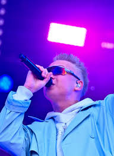
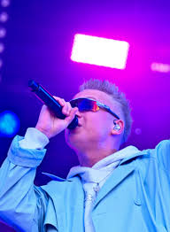

nublu
 

Elu
Esimene lõik. Siia tuleb sisu. Mingi tutvustav osa elust.
Looming
nublu on tituleeritud, kui mõminaräppar, aga teda kirjeldatakse
ka osava poeedina, kelle looming kajastab tava elu ilma lihtsustamata paraja koguse
eneseiroonia ja lüürikasse peidetud kalambuuriga. nublu tavalised teemad kujutavad
noore inimese maailma ja sellega seostuvaid raskusi ning lõbusid. Tema peamised
teemad on noorusest, identiteedist, linnakultuurist, eestlaslikkusest ning vastuolud
edu ja lihtsuse vahel. Siiski jääb tema looming omamoodi müstiliseks, ta ei ava end
täielikult, vaid laseb kuulajal tõlgendada. nublu esitab oma loomingut karakteri
läbi, ta looming ei jutusta päris temast vaid tema loodud karakterist, keda publik
ettekujutab. Nublu looming esitleb teda kui fuckboy, kes on rahul, kui tema
minimaalsed vajadused on täidetud.
nublu tekstid on mitmekihilised, kujundlikud ning vastandlikud.
Tema loomingus on palju slängi, sõnamänge ja rütmilisi kordusi. Lisaks on tema
tekstid voolavad ja sobivad hästi muusikasse, mitte pole lihtsalt luule. nublu
muusikas on ka mitmete žanrite mõju, nagu räpp, pop, indie, elektroonika ja funk.
Tema produktsioon on pigem minimalistlik, meloodiline ja õhuline, kui agressiivne.
nublu kauaoodatud esimene album “Cafe Kosmos” koosneb peamiselt juba välja tulnud
singlitest. Albumi kõla ja produktsioon on puhas ja poleeritud, kuid siiski on tunda
ka spontaansust. Albumi viimane laul „Chiri Biri Binn“ ongi sellepärast sobiv, sest
tänu sõnade ja ülestunnistuste kõrval kõlab ka ootamatult Kuldne Trio.
/…/
Aitäh, et oled ära kannatanud
/…/
Sest ma võin olla
Ülitore, ülinõme, ülileidlik
Päevalõpuks ma olen
Lihtsalt paras veidrik
Proovisin vaid õnne
Ja ma rohkemat ei teindki
/…/
Elukutse - räppar
Ja samal ajal logopeed
[Hook: Kuldne Trio, Nublu]
Kivi rünta punta änta vänta
/…/
Albumil on ka laule, mis räägivad kuulsuse varjuküljest, samas ka libisev rahu ja enda
otsimine. Need laulud pigem peegeldavad artisti kolmandas iskus, mitte ei vaata seest
välja, nagu varem. nublu ei pürgi enam niivõrd kõrgusesse, kus tal juba lagi näha vaid
sügavusse, mida ei ole varem avastatud. Kuigi avameelsus võib olla ootamatu ja ka
vastuoluline, siis hoiab loomingu värskemana tema metamõõde ning eneseiroonia.
Nublu salapärasus
Nublu on Eestis üks salapärasemaid ja omanäolisemaid artiste. Tema varjatud olemus
pole juhuslik, vaid teadlik otsus, mis sündis juba esimestel esinemistel. Alguses
piirdus see lihtsa maskeeringuga, milleks olid kollased prillid, kuid hiljem
lisandusid suusaprillid, mis said tema tunnusmärgiks. Reket, kes on üks tema
esimestest koostööpartneritest, soovitas tal anonüümsena jätkata, öeldes: „Keegi
nagunii ei tea, kes sa oled, jätka seda.“
Nublu on öelnud, et hoiab avalikkusest eemale, kui tal pole midagi olulist öelda.
Ta ei naudi intervjuude andmist ega soovi olla pidevalt tähelepanu keskpunktis.
Tema jaoks on muusika see, mis peab kõnelema, mitte nimi, nägu ega isiklik elu.
Nublu salapärasus loob talle vabaduse väljendada end ilma ootuste ja hinnanguteta.
See anonüümsus pole ainult kaitsemeede, vaid osa tema kunstilisest identiteedist.
Ta on öelnud: „Asjad pole alati nii, nagu näivad,“ mis vihjab, et saladus võib kanda
sügavamat mõtet. Nublu on loonud endale karakteri, kes elab justkui teises universumis,
kus muusika on tähtsam kui inimene selle taga. Tema mask ei peida mitte üksnes nägu,
vaid loob ruumi fantaasiale ja tõlgendusele.
Fun Facts
Neljas lõik. Siia tuleb sisu. Mingi fun facts.